EmotiLock
What Makes Us Unique?
EmotiLock explores a different kind of sign-in: using a chosen sequence of facial expressions as an authentication pattern.

EmotiLock
EmotiLock explores a different kind of sign-in: using a chosen sequence of facial expressions as an authentication pattern.
Build a memorable unlock pattern by choosing an order from seven expression categories.
The project uses face detection and expression analysis to interpret the steps in a chosen sequence.
A personal sequence gives this authentication concept a pattern that is more memorable to you.
Depending on the product, sign-in may use a password, passkey, fingerprint, or face scan.
Use an ordered pattern drawn from categories such as happy, neutral, surprised and more.
EmotiLock is a project concept; this comparison describes the approach, not a guarantee of security performance.
See how it works